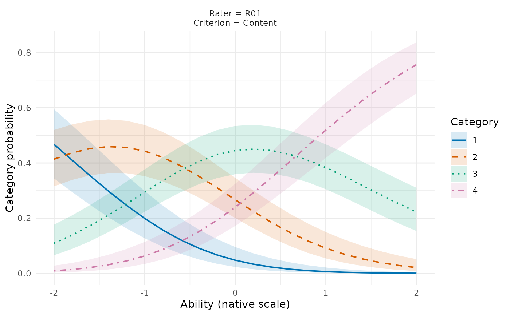

Uncertainty in GPCM category probabilities and information curves
Source:R/api-gpcm-curve-intervals.R
mfrm_curve_intervals.RdEvaluate specified rating contexts at known ability values and propagate the full calibration covariance to category probabilities or per-rating Fisher information. This is uncertainty in a fitted curve, not a Person score interval.
Usage
mfrm_curve_intervals(
fit,
newdata,
type = c("probability", "information"),
method = c("model", "sandwich"),
clusters = NULL,
adjust = FALSE,
level = 0.95,
simultaneous = c("none", "bonferroni")
)
# S3 method for class 'mfrm_curve_intervals'
summary(object, ...)
# S3 method for class 'mfrm_curve_intervals'
print(x, ...)
# S3 method for class 'mfrm_curve_intervals'
plot(
x,
title = "GPCM curve uncertainty",
subtitle = paste("Approximate calibration intervals; fixed ability", x$settings$method,
paste0(100 * x$settings$level, "%"), if (x$settings$simultaneous == "none")
"pointwise" else "Bonferroni grid points", sep = " | "),
palette = NULL,
draw = TRUE,
caption = NULL,
...
)Arguments
- fit
A native GPCM MML fit. Two-family fits supply provisional point curves only; intervals and covariance adjustments are unavailable.
- newdata
Data frame with each fitted non-Person facet and a numeric
Thetacolumn. Each row is one rating context at one known ability value. Use original facet labels. Unknown levels and missing inputs are refused. Previously unobserved combinations of known levels are allowed and labelled in the returnedcontextstable.- type
"probability"(one row per category) or"information"(one row per supplied context/ability). Information is per rating, not a sum over all observed exposures as incompute_information().- method, clusters, adjust, level, simultaneous
As in
confint.mfrm_fit().- object, x
A saved
mfrm_curve_intervalsresult.- ...
Unused.
- title, subtitle
Optional returned text; NULL removes it. Figure text is not drawn. Use
plot_data(p, "title")andplot_data(p, "notes").- palette
Optional vector of colors, one per category/series. Line types distinguish series in addition to color. The default is colorblind friendly.
- draw
Draw the ggplot immediately? Default TRUE; FALSE returns it only.
- caption
Optional returned caption. If omitted, unavailable intervals are counted and explained, along with unobserved combinations of fitted levels. Two-family point-only curves instead state that calibration intervals are unavailable for the entire plot, without marking every curve point. NULL removes the caption without removing markers or the reasons in the saved table.
Value
A mfrm_curve_intervals list with table, settings, and the exact
newdata, plus contexts identifying each InputRow as an observed or
unobserved combination of fitted facet levels (ObservedContext). This
records the retained rating design, not statistical identification or
interval reliability. Its plot method returns a ggplot with the plotted data available
in plot$data; descriptions and cautions are available through
plot_data(p, "notes"), separately from the figure.
summary() returns settings, the complete interval table, contexts,
numerical cautions and the anchor note without recalculating information.
Details
The complete GPCM predictor, including fitted facet interactions,
is evaluated from the free parameter vector. A central-difference Jacobian
propagates the full joint covariance. Probability limits use a logit delta
approximation; information limits use a log delta approximation for
slope^2 * Var(category | Theta, context). Bounds respect their support.
Rounded probabilities zero/one and nonpositive information keep the point
but have unavailable intervals. The supplied Theta values are fixed on
the fitted native scale; their estimation uncertainty is not included.
Estimated population parameters enter the joint covariance as nuisance
parameters, not as a request to transform or integrate the Theta grid.
Bonferroni applies to the finite collection of all output rows in this
call, not to the continuous curve between them. Ribbons connect grid-point
intervals for display. Sandwich interpretation and independence assumptions
are those of confint.mfrm_fit(). These are asymptotic approximations;
numerical agreement does not establish sampling coverage.
A reanalysis of saved correctly specified GPCM fits found substantial
undercoverage for probability intervals in small incomplete designs,
including Bonferroni-adjusted finite-grid families. Adjustment cannot
repair inaccurate marginal approximations. Refitting every dataset in the
affected unequal-rater-slope condition with the updated optimizer left
its interval results unchanged. See the GPCM scope vignette
for the evaluated grid, denominators and source limitations; an available
interval is not a finite-sample coverage certification.
Printing and the returned plot description identify the approximation.
Custom plot text may omit that description; retain the method and its
limitations in the figure legend or accompanying report.
For one-family curves, crosses mark retained estimates whose intervals
are unavailable. Two-family curves have no calibration intervals; the
returned subtitle and caption state this without covering curves in crosses.
A context with only one supplied ability value retains colored points.
Panel labels put each facet on its own line. With many rating contexts,
supply the comparisons of interest in newdata or enlarge the exported
figure; plotting does not select or discard contexts automatically. Ribbons
stop at unavailable grid points; a missing ribbon does not mean zero
uncertainty. Consult the table's InferenceReview for each reason.
A numerically verified but ill-conditioned information inverse can
supply intervals with a warning, as described in confint.mfrm_fit().
The warning is saved in cautions and the table's InferenceReview, and
appears in printing and the returned plot description. A custom subtitle,
including NULL, changes the display without removing saved diagnostics.
In a one-family fit with fixed facet anchors or group means, model and
sandwich intervals condition on those supplied values. Their source
calibration uncertainty is not propagated. Fixing a facet location does
not fix its slope, thresholds or whole response curve. Availability still
depends on the joint-information and numerical checks described above.
Two slope families
For a two-family fit, the two component slopes are multiplied in each
specified context. The shared evaluator returns provisional fitted values,
including after numerical nonconvergence; it does not certify their
reliability. SE, Lower and Upper remain missing and CIEligible is
false. Printing and default plot text identify this scope without claiming
nominal intervals. Sandwich and simultaneous adjustments are not available.
The existing plot, saved-data, report and export routes preserve these values
and missing intervals. A slope value of one is not a rater-quality threshold.
Examples
# How do category probabilities vary with ability in one rating context?
ratings <- load_mfrmr_data("example_core")
# Reuse the synthetic GPCM fit; estimation uses 61 quadrature points.
# Full regeneration recipe: examples/measurement-fits.R in the package.
fit <- readRDS(system.file("examples", "measurement-fits.rds",
package = "mfrmr", mustWork = TRUE))$gpcm
# Select actual labels from the example; replace them with your context.
grid <- expand.grid(Theta = seq(-2, 2, length.out = 21),
Rater = unique(ratings$Rater)[1],
Criterion = unique(ratings$Criterion)[1])
curves <- mfrm_curve_intervals(fit, grid)
# At ability zero, read the probabilities of the original score categories.
subset(curves$table, Theta == 0,
select = c(Category, Estimate, Lower, Upper, CIEligible, InferenceReview))
#> Category Estimate Lower Upper CIEligible
#> 41 1 0.04778286 0.02327997 0.09555277 TRUE
#> 42 2 0.26687841 0.20042971 0.34582863 TRUE
#> 43 3 0.44514863 0.35944194 0.53424704 TRUE
#> 44 4 0.24019010 0.17198450 0.32483327 TRUE
#> InferenceReview
#> 41 Approximate calibration uncertainty at fixed ability and rating context; finite-sample coverage is not guaranteed.
#> 42 Approximate calibration uncertainty at fixed ability and rating context; finite-sample coverage is not guaranteed.
#> 43 Approximate calibration uncertainty at fixed ability and rating context; finite-sample coverage is not guaranteed.
#> 44 Approximate calibration uncertainty at fixed ability and rating context; finite-sample coverage is not guaranteed.
plot(curves)

# Ribbons describe calibration uncertainty at fixed ability, not uncertainty
# about an individual's ability. They are pointwise, not simultaneous bands.
file <- tempfile(fileext = ".rds")
saveRDS(curves, file) # Keep the complete result, including context and notes
saved <- readRDS(file)
saved$settings
#> $type
#> [1] "probability"
#>
#> $method
#> [1] "model"
#>
#> $clusters
#> NULL
#>
#> $adjust
#> [1] FALSE
#>
#> $level
#> [1] 0.95
#>
#> $simultaneous
#> [1] "none"
#>
#> $facets
#> [1] "Rater" "Criterion"
#>
#> $point_only
#> [1] FALSE
#>
#> $target
#> [1] "Calibration uncertainty at fixed native-scale ability and rating context"
#>